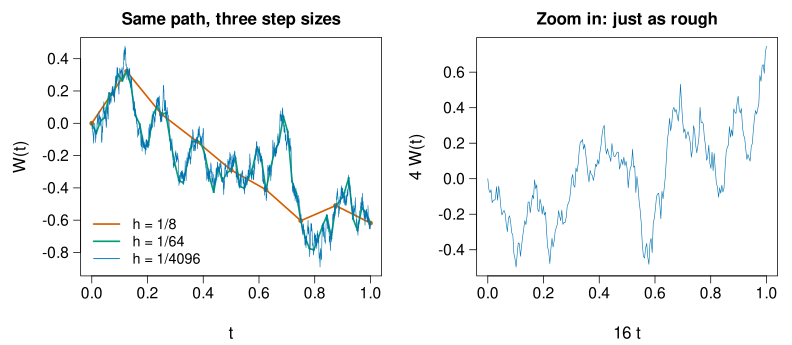
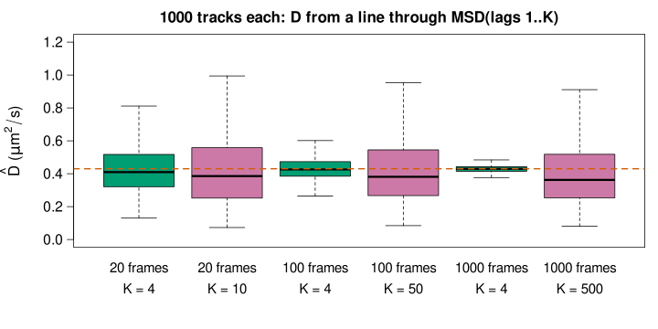
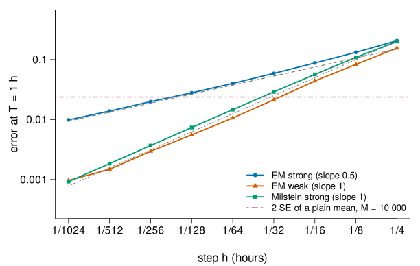
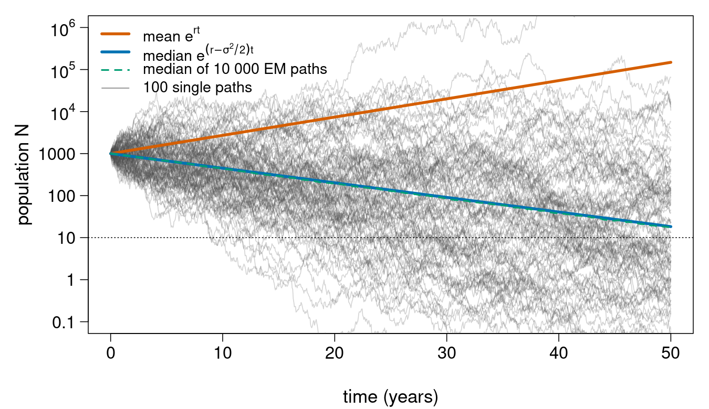
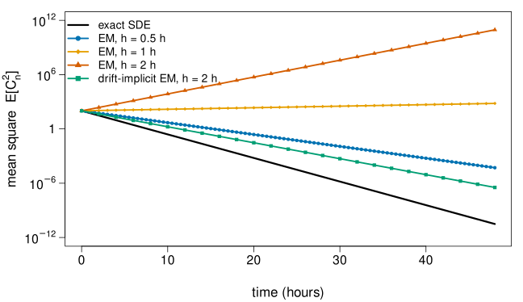
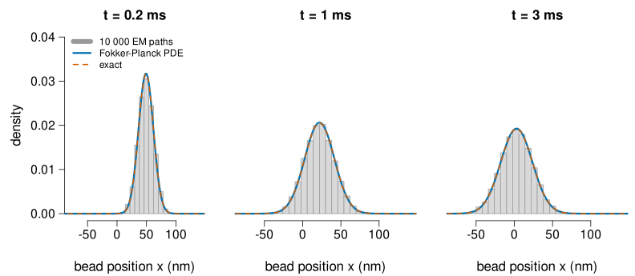

An ODE with a random kick in every time step: \;dX = f(X)\,dt + g(X)\,dW. One method, Euler–Maruyama, and the ways it goes wrong.
Brownian motionW(t): a random walk with steps of size \sqrt h. Rough paths without a derivative.
Biology: a bead or a cell diffusing in a microchannel: estimate D from its track (mean squared displacement).
Euler–Maruyama: an Euler step plus a normal kick. Test problem: a bead in an optical trap (Ornstein–Uhlenbeck).
Two kinds of error: strong (single paths, order ½) and weak (averages, order 1). A classic bug that breaks the first.
The Itô surprise: a population whose mean grows, while the typical population dies out. Milstein: one extra term.
Failures: negative values and NaN; blow-up at a step that is fine for the ODE. The Fokker–Planck PDE for the histogram.
Recap: noise beyond molecule counts
In Stochastic simulation the chemical Langevin equationdm = (k - \delta m)\,dt + \sqrt{k + \delta m}\;dW was solved with one line:
k <-10; delta <-1; h <-0.01; m <-10# per hour; one step from m = 10m <- m + (k - delta * m) * h +sqrt((k + delta * m) * h) *rnorm(1) # Euler-Maruyama
There it was an approximation of the SSA for many molecules. Continuous noise also appears directly:
system
variable X
noise from
bead or cell in a microchannel
position (µm)
thermal collisions (Brownian motion)
bead in an optical trap
position (nm)
the same, pulled back to the centre
population in a fluctuating environment
number N
good and bad years: a random growth rate
neuron below threshold
membrane voltage
many random synaptic inputs
Brownian motion: the limit of a random walk

W(0) = 0; increments W(t + h) - W(t) \sim N(0, h), independent of the past. Variance grows like t.
Refine the step: the path gets rougher, not smoother. Zoomed in, it looks the same: no derivative anywhere.
Why steps of size \sqrt h
Walk 1/h steps of \pm a to t = 1, for 2000 walkers. Which step size a gives a sensible limit?
set.seed(1)for (h inc(0.1, 0.01, 0.001)) { # 1/h steps of size +-a, 2000 walkers, to t = 1 steps <-matrix(sample(c(-1, 1), 2000/ h, replace =TRUE), ncol =2000)cat(sprintf("h = %-5g var W(1): a = h %.4f, a = sqrt(h) %.4f\n", h,var(colSums(h * steps)), var(colSums(sqrt(h) * steps))))}# h = 0.1 var W(1): a = h 0.1002, a = sqrt(h) 1.0022# h = 0.01 var W(1): a = h 0.0104, a = sqrt(h) 1.0402# h = 0.001 var W(1): a = h 0.0010, a = sqrt(h) 1.0393
Variances of independent steps add: \frac1h \cdot a^2. Steps a = h: variance h \to 0, no motion. Steps a = \sqrt h: variance 1 for every h.
The slope of one step, \sqrt h / h = 1/\sqrt h, grows without bound as h \to 0: no derivative.
A bead in a microchannel
A bead of radius a = 0.5 µm in water, filmed at 10 frames per second. Each coordinate does a random walk with x(t + \Delta t) = x(t) + \sqrt{2D\,\Delta t}\;Z, \qquad \text{MSD}(t) = \mathrm E\,|\mathbf r(t) - \mathbf r(0)|^2 = 2dDt \;\;(d = \text{dimensions}).
D <-0.43; dt <-0.1; n <-100# µm^2/s, s per frame, framesset.seed(1)xy <-apply(matrix(rnorm(2* n, sd =sqrt(2* D * dt)), n), 2, cumsum) # x, ymsd <-function(xy, K) sapply(1:K, function(k) # mean squared displacement, lag kmean(rowSums((xy[-(1:k), ] - xy[1:(nrow(xy) - k), ])^2)))lag <- (1:10) * dtfit <-lm(msd(xy, 10) ~0+ lag) # straight line through 0coef(fit) /4# 2D: MSD = 4 D t# lag# 0.3773289
One track uses every pair of frames k apart: 99 displacements at lag 1, 90 at lag 10.
lm with ~ 0 + lag: least squares for the slope of a line through the origin. True value 0.43; this track gives 0.38.
Short tracks, long lags

Fit the first K = 4 lags: sd of \hat D is 0.155 (20 frames), 0.065 (100), 0.020 (1000). Long tracks pay off.
Fit up to half the track: sd about 0.24 whatever the length. Few independent intervals at large lags, all correlated.
With flow along x (u = 5 µm/s), the 2D MSD gains u^2t^2: \hat D = 2.5 instead of 0.43. Use the coordinate across the flow (MSD = 2Dt).
The SDE and the Euler–Maruyama step
dX = \underbrace{f(X)\,dt}_{\text{drift: the ODE}} + \underbrace{g(X)\,dW}_{\text{diffusion: noise strength}}
Euler–Maruyama (EM): Euler for the drift, plus a normal kick with standard deviation g\sqrt h: X_{n+1} = X_n + f(X_n)\,h + g(X_n)\,\Delta W_n, \qquad \Delta W_n = \sqrt h\, Z_n,\; Z_n \sim N(0, 1).
By hand: bead in a trap, f(x) = -\theta x, g = \sigma, with \theta = 1 per ms, \sigma = 30 nm/\sqrt{\text{ms}}, x_0 = 40 nm, h = 0.01 ms, Z_0 = -1.2: x_1 = 40 - 1 \cdot 40 \cdot 0.01 + 30 \cdot \sqrt{0.01} \cdot (-1.2) = 40 - 0.4 - 3.6 = 36.0 \text{ nm}.
ou_var <-function(h, exact =FALSE, n =2e5) { # long run of x_{n+1} = a x_n + b Z a <-if (exact) exp(-theta * h) else1- theta * h b <-if (exact) sqrt(D / theta * (1- a^2)) else sigma *sqrt(h) x <-numeric(n); for (i in2:n) x[i] <- a * x[i -1] + b *rnorm(1)var(x)}set.seed(1); h <-c(0.1, 1, 1.5)rbind(h, em =sapply(h, ou_var), em_theory = sigma^2/ (theta * (2- theta * h)),exact =sapply(h, ou_var, exact =TRUE))# [,1] [,2] [,3]# h 0.1000 1.0000 1.5000# em 447.5699 857.0005 1712.7465# em_theory 452.6316 860.0000 1720.0000# exact 420.7343 430.4357 431.1229
EM’s stationary variance is \dfrac{\sigma^2}{\theta(2 - \theta h)} (exercise B3): twice too large at \theta h = 1, infinite at \theta h = 2.
The exact recursion gives 430 for every h. Check: compare the variance with \sigma^2/(2\theta).
Strong and weak error
Two questions, two error measures, at a final time T:
measures
needs
EM order
strong
\mathrm E\,\lvert X_n - X(T)\rvert: is each path right?
exact X(T) on the same Brownian path
½
weak
\lvert\mathrm E\,X_n - \mathrm E\,X(T)\rvert: is the distribution right?
exact mean (or any average)
1
Test problem with an exact solution: geometric Brownian motion, a population with a noisy growth rate, dN = rN\,dt + \sigma N\,dW, \qquad N(T) = N_0 \exp\!\big((r - \tfrac{\sigma^2}{2})T + \sigma W(T)\big).
Here r = 0.8 per hour (the growth rate of the OD example), \sigma = 0.5 per \sqrt{\text{hour}}, N_0 = 1, T = 1 h.
Order ½: halve h, strong error only \times 0.71. Measure it as in Convergence and cost: slope on a log–log plot.
Strong error in R: one Brownian path, many step sizes
r <-0.8; s <-0.5; N0 <-1; T <-1# per h, per sqrt(h), relative sizeset.seed(1); M <-10000; nf <-2^10; hf <- T / nfdWf <-matrix(sqrt(hf) *rnorm(nf * M), nf) # fine increments, one column per pathNT <- N0 *exp((r - s^2/2) * T + s *colSums(dWf)) # exact N(T) on each pathem_gbm <-function(dW, h) { # EM, all M paths at once N <-rep(N0, ncol(dW))for (i in1:nrow(dW)) N <- N + r * N * h + s * N * dW[i, ] N}for (R inc(64, 16, 4, 1)) { # coarse step h = R hf N <-em_gbm(rowsum(dWf, rep(1:(nf / R), each = R)), R * hf) # sum R fine incrementscat(sprintf("h = 1/%-4d strong %.5f weak %.5f\n", nf / R, mean(abs(N - NT)), abs(mean(N - NT))))}# h = 1/16 strong 0.08772 weak 0.04384# h = 1/64 strong 0.04001 weak 0.01060# h = 1/256 strong 0.01990 weak 0.00296# h = 1/1024 strong 0.00987 weak 0.00097
h divided by 4: strong error halves (order ½), weak error divides by about 4 (order 1).
On a log–log plot

Fitted slopes over h = 1/1024 \dots 1/4: EM strong 0.54, EM weak 0.94. Milstein (later) strong 0.98.
The weak errors below the dashed line could not be seen by comparing a plain mean of 10 000 paths with e^{rT}.
A classic bug: fresh noise at every step size
The same loop, but each coarse run draws new increments instead of summing the fine ones:
for (R inc(64, 16, 4, 1)) { dW <-matrix(sqrt(R * hf) *rnorm(nf / R * M), nf / R) # BUG: a different path N <-em_gbm(dW, R * hf)cat(sprintf("h = 1/%-4d strong %.5f weak %.5f\n", nf / R, mean(abs(N - NT)), abs(mean(N - NT))))}# h = 1/16 strong 1.19844 weak 0.05121# h = 1/64 strong 1.21779 weak 0.01577# h = 1/256 strong 1.23139 weak 0.02480# h = 1/1024 strong 1.21985 weak 0.02192
Strong error stuck at 1.2: the distance between two independent populations, not a discretisation error.
Every individual number looks plausible. Check: the strong error must fall as h falls; build every coarse increment from the fine ones.
The Itô surprise: mean up, typical path down
Population in a fluctuating environment: r = 0.1 per year, \sigma = 0.6 per \sqrt{\text{year}}, N_0 = 1000.

The mean grows like e^{rt}. The median shrinks like e^{(r - \sigma^2/2)t}, because \sigma^2/2 = 0.18 > r.
After 50 years: mean 148 000, median 18; 45% of populations below 10 individuals.
Where -\sigma^2/2 comes from
r <-0.1; s <-0.6; N0 <-1000; h <-0.01# per year; 10 yearsset.seed(1); N <-rep(N0, 10000)for (i in1:1000) N <- N + r * N * h + s * N *sqrt(h) *rnorm(10000)c(mean =mean(N), exact_mean = N0 *exp(r *10), median =median(N),exact_median = N0 *exp((r - s^2/2) *10), frac_below_N0 =mean(N < N0))# mean exact_mean median exact_median frac_below_N0# 2582.0186 2718.2818 470.1851 449.3290 0.6553set.seed(1); Z <-rnorm(1e6)mean(log(1+ r * h + s *sqrt(h) * Z)) / h # growth rate of log N, per year# [1] -0.08045312
One step multiplies N by 1 + x, x = rh + \sigma\sqrt h Z. Then \log(1 + x) \approx x - x^2/2 and \mathrm E\,x^2 \approx \sigma^2 h: \log N grows at r - \sigma^2/2.
That is Itô’s formula for \log N, read off one EM step. A term \propto (\Delta W)^2 \approx h that ODE calculus drops.
Milstein: one extra term
The (\Delta W)^2 term that EM misses, added back: X_{n+1} = X_n + f h + g\,\Delta W_n + \tfrac12\, g\, g'\,\big((\Delta W_n)^2 - h\big), \qquad g' = \frac{dg}{dx}.
mil_gbm <-function(dW, h) { # GBM: g = s N, g g' = s^2 N N <-rep(N0, ncol(dW))for (i in1:nrow(dW)) N <- N + r * N * h + s * N * dW[i, ] +0.5* s^2* N * (dW[i, ]^2- h) N}r <-0.8; s <-0.5; N0 <-1# back to the strong-error testfor (R inc(64, 16, 4, 1)) { dW <-rowsum(dWf, rep(1:(nf / R), each = R)) # same paths as beforecat(sprintf("h = 1/%-4d EM %.5f Milstein %.5f\n", nf / R,mean(abs(em_gbm(dW, R * hf) - NT)), mean(abs(mil_gbm(dW, R * hf) - NT))))}# h = 1/16 EM 0.08772 Milstein 0.05654# h = 1/64 EM 0.04001 Milstein 0.01462# h = 1/256 EM 0.01990 Milstein 0.00368# h = 1/1024 EM 0.00987 Milstein 0.00092
Strong order 1: ×4 per quartering of h (green line two slides back). For scalar noise only.
Additive noise (g constant, the OU trap): g' = 0, Milstein = EM, so EM already has strong order 1 there.
Failure 1: negative values and NaN
The chemical Langevin equation for a gene with mean 0.5 molecules (k = 0.5, \delta = 1 per hour):
f <-function(m) 0.5- m # drift: the ODEg <-function(m) sqrt(0.5+ m) # NaN once m < -0.5set.seed(1)m <-replicate(2000, em(f, g, 0, h =0.01, n =1000)[1001])mean(is.nan(m))# [1] 0.064 (Warning: NaNs produced)g <-function(m) sqrt(max(0.5+ m, 0)) # "fix": clip inside the sqrtm <-replicate(2000, em(f, g, 0, h =0.01, n =1000)[1001])c(nan =mean(is.nan(m)), negative =mean(m <0))# nan negative# 0.0000 0.2695
Clipping removes the NaN, not the problem: a quarter of the cells end with a negative number of molecules.
A kick of sd g\sqrt h does not know that X \ge 0. Check: count negatives; for small numbers use the SSA of Stochastic simulation.
Failure 2: stable for the ODE, blows up for the SDE
Drug clearance C' = -0.8\,C (Euler: stable for h < 2.5 h), with a fluctuating clearance rate: dC = -kC\,dt + \mu C\,dW.
k <-0.8; mu <-1; C0 <-10# per hour; noise in the clearance rateset.seed(1)for (h inc(0.5, 1, 2)) { # Euler for the ODE is stable for h < 2.5 C <-rep(C0, 10000) # 10 000 patients, 48 hoursfor (i in1:(48/ h)) C <- C - k * C * h + mu * C *sqrt(h) *rnorm(10000)cat(sprintf("h = %-3g E[C^2] factor %.2f median %.1e max %.1e\n", h, (1- k * h)^2+ mu^2* h, median(abs(C)), max(abs(C))))}# h = 0.5 E[C^2] factor 0.86 median 3.8e-27 max 8.2e-11# h = 1 E[C^2] factor 1.04 median 2.0e-12 max 1.1e-01# h = 2 E[C^2] factor 2.36 median 1.1e-01 max 8.2e+05
Exact SDE: \mathrm E\,C^2 \propto e^{(-2k + \mu^2)t} decays. EM: \mathrm E\,C_n^2 is multiplied by (1 - kh)^2 + \mu^2 h per step: grows for h > 0.94.
Mean-square stability needs a smaller step than the ODE. At h = 2: one patient at 8 \times 10^5 mg/L from 10.
The fix: drift-implicit Euler–Maruyama
Treat the drift implicitly, as backward Euler in Stiffness and implicit methods; keep the noise explicit: C_{n+1} = C_n - k\,h\,C_{n+1} + \mu\,C_n\,\Delta W_n \quad\Rightarrow\quad C_{n+1} = \frac{C_n\,(1 + \mu\,\Delta W_n)}{1 + kh}.

Mean-square factor \dfrac{1 + \mu^2 h}{(1 + kh)^2} = 0.44 at h = 2: decays, for everyh here. Accuracy still needs small h.
From paths to a PDE: Fokker–Planck
The histogram of many paths has a density p(x, t). It obeys a drift–diffusion equation: \frac{\partial p}{\partial t} = -\frac{\partial}{\partial x}\big(f(x)\,p\big) + \frac{\partial^2}{\partial x^2}\Big(\frac{g(x)^2}{2}\,p\Big).
The flow-plus-diffusion equation of Flow plus diffusion, with velocity u(x) = f(x) and D = g^2/2:
SDE (one bead)
Fokker–Planck (many beads)
drift f(x) = -\theta x: pulled to the centre
flow towards 0 from both sides
noise g = \sigma, D = \sigma^2/2 = 430 nm²/ms
Fick diffusion with the bead’s D
stationary sd 20.7 nm
steady state: normal, variance D/\theta
Simulate paths and histogram them, or solve one PDE for the density. Same answer, different costs and errors.
Fokker–Planck in R: the advection–diffusion scheme
The trap is moved by 60 nm at t = 0: beads start near x = 60 nm (sd 5 nm). Fluxes at the cell faces, explicit Euler:
dx <-2; x <-seq(-100, 160, by = dx) # nm, grid pointsxf <- x[-1] - dx /2; u <--theta * xf # drift velocity at the facesdt <-0.002; c(C =max(abs(u)) * dt / dx, r = D * dt / dx^2, P =max(abs(u)) * dx / D)# C r P# 0.1590000 0.2150000 0.7395349p <-dnorm(x, 60, 5) # start: beads near 60 nmfor (k in1:round(1/ dt)) { # to t = 1 ms F <- u * (head(p, -1) + p[-1]) /2- D *diff(p) / dx # drift + Fick, central p <- p - dt / dx * (c(F, 0) -c(0, F)) # no flux through the ends}c(mass =sum(p) * dx, mean =sum(x * p) * dx, var =sum((x -sum(x * p) * dx)^2* p) * dx)# mass mean var# 1.00000 22.05068 373.56800
C + 2r = 0.59 \le 1, cell Péclet P = 0.74 < 2: central is safe. Exact at 1 ms: mean 22.07, variance 375.2.
Upwind on the same grid adds D_\text{num} \approx |u|\Delta x/2: variance 406, 8% too large.
The PDE and the histogram agree

Grey: 10 000 EM paths (h = 0.01 ms). Blue: the PDE. Orange dashed: the exact normal density.
The relaxation to the stationary density with variance D/\theta takes about 1/(2\theta) = 0.5 ms per factor e.
Try it: paths, histogram and step size
Cost: step size and number of paths together
Estimating \mathrm E\,N(T) by EM with step h and M paths: \text{total error} \approx \underbrace{c\,h}_{\text{weak error}} + \underbrace{2\,s/\sqrt M}_{\text{Monte Carlo}}, \qquad \text{work} = M/h \text{ steps}.
eps <-c(0.1, 0.01, 0.001) # wanted accuracy of E[N(1)]h <- eps /2/0.71# weak error ~ 0.71 h: half the budgetM <- (2*1.19/ (eps /2))^2# 2 SE = other half; sd of N(1) = 1.19signif(rbind(eps, h, M, steps = M / h), 2)# [,1] [,2] [,3]# eps 1.0e-01 1.0e-02 1.0e-03# h 7.0e-02 7.0e-03 7.0e-04# M 2.3e+03 2.3e+05 2.3e+07# steps 3.2e+04 3.2e+07 3.2e+10
One more digit costs 1000 times the work: 10 × smaller h, 100 × more paths. A tiny h with few paths, or many paths with a large h, wastes work.
Checklist: is my SDE simulation right?
Test on a known answer: OU stationary variance \sigma^2/(2\theta), GBM mean N_0e^{rT} and median; for small models, the Fokker–Planck density.
Halve h: averages must change by less than their Monte Carlo error. Measure the order on a log–log plot.
Strong tests use the same Brownian path at every h: sum fine increments, never draw fresh ones. Test order ½ on multiplicative noise.
Ito: the mean is not the typical path. Report medians or quantiles, not only means, for multiplicative noise.
Positivity: count negative values and NaN; for small copy numbers use the SSA.
Stability: an h that is stable for the ODE may not be for the SDE. Check \mathrm E X^2; use drift-implicit EM for stiff drift.
Every average has an error bar: mean \pm 2 SE over paths; heavy tails make the SE unreliable.
Summary
Brownian motion: independent increments \Delta W \sim N(0, h), steps of size \sqrt h; rough paths, no derivative. MSD = 2dDt gives D; fit short lags of long tracks.
SDEdX = f\,dt + g\,dW: drift = the ODE, g = noise strength. Euler–Maruyama: X_{n+1} = X_n + f h + g\sqrt h\,Z.
Strong error (paths) order ½, weak error (averages) order 1, for multiplicative noise; additive noise gives strong order 1. Test with the same Brownian path.
Itô: \log N grows at r - \sigma^2/2: the mean can grow while typical populations go extinct. Milstein adds \frac12 gg'(\Delta W^2 - h): strong order 1.
Failures: negative values / NaN; mean-square instability at steps stable for the ODE (fix: drift-implicit EM); variance inflated by large \theta h.
Fokker–Planck: the density of many paths solves an advection–diffusion PDE with u = f, D = g^2/2. Total error = discretisation + Monte Carlo: choose h and M together.